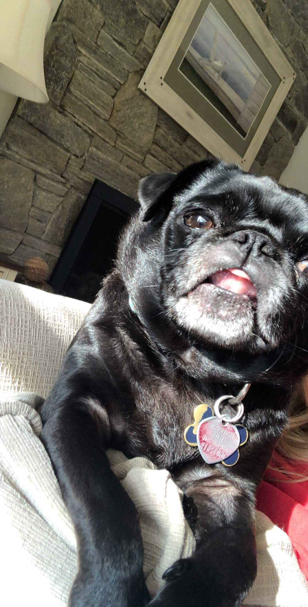
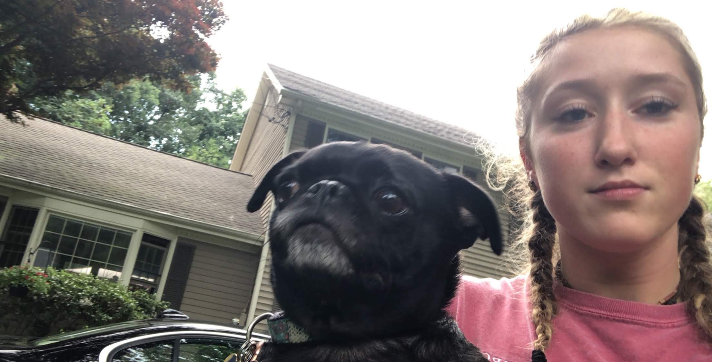
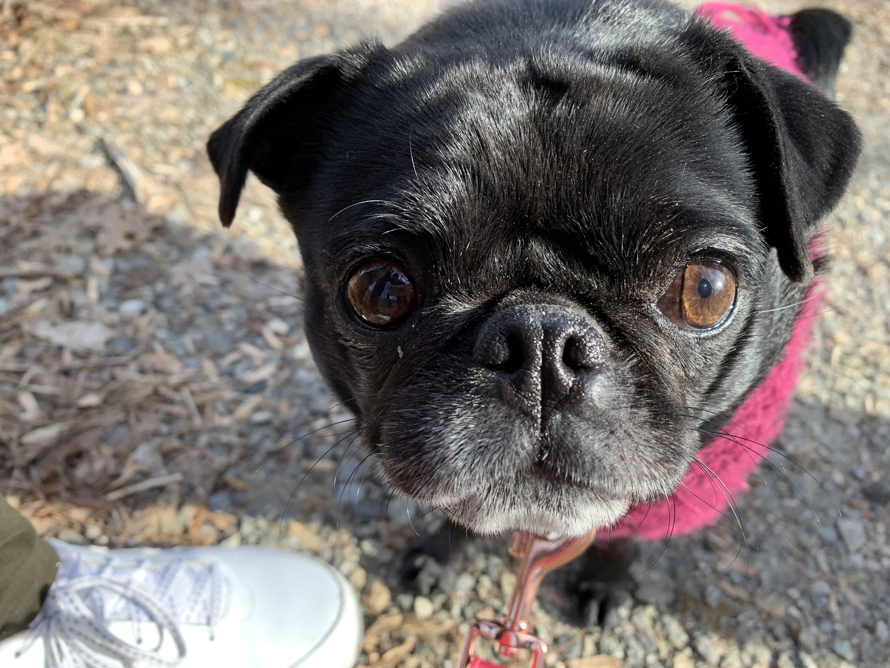

Meet Rosie
Meet Rosie! Rosie is the little black furred runt of the family. She is a year younger than her older sister Lucy, being just 4 years old. Rosie is so much more different from Lucy.
Rosie, is introverted compared to energetic and friendly Lucy. Rosie doesn't like any other dog besides Lucy and is
actually afraid of other animals. She even has a weird eating schedule. Rosie only eats at night, she never eats in the
morning.
Rosie also only really likes our family... that being my mom, my dad, my two sisters and myself. Rosie favors
my mom out of everyone though, they have a close relationship. Rosie is a one of a kind pug, she's smaller than most and shy unlike other pugs. However, we love her very much.


